0x03_neutron¶
功能¶
- 二层交换Switching: Nova的Instance通过 虚拟交换机 连接到虚拟二层网络。
- 虚拟交换机
- Linux Bridge
- Open vSwitch(OVS)，开源
- 利用虚拟交换机创建
- VLAN
- 基于隧道的Overlay网络
- VxLAN
- GRE(Linux Bridge不支持)
- 虚拟交换机
- 三层路由Routing: 通过 虚拟路由器 使不同网段的instance之间，以及与外部网络通信。
- 虚拟路由器router: 通过IP forwarding, iptables实现路由和NAT。
- 负载均衡Load balancing(LBaaS): 将负载分发到多个instance。
- HAProxy
- 防火墙Firewalling
- security group: 通过iptables限制进出instance的网络数据包
- FWaaS: 通过iptables限制进出虚拟路由器的网络数据包
网络资源¶
network¶
二层广播域，在project下创建多个network。
- local: 单机lo, 同一节点上同一网络的instance通信
- flat: 无VLAN tagging, 同一网络跨节点通信
- VLAN: 具有802.1q tagging, 跨节点
- VxLAN: 唯一标识segmentation ID(VNI)，二层数据包封装成UDP包在三层传输
- GRE: 使用IP包封装
subnet¶
IP地址段，一个network有多个subnet。
port¶
虚拟交换机上的端口，定义IP和MAC。instance的虚拟网卡VIF(Virtual Interface)绑定到port时分配IP和MAC。一个subnet有多个port。
映射关系
project 1:n network 1:n subnet 1:n port 1:1 VIF n:1 instance
Linux Bridge¶
-
配置Neutron使用ML2作为core plugin:
/etc/neutron/neutron.conf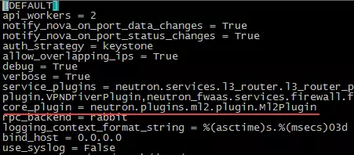
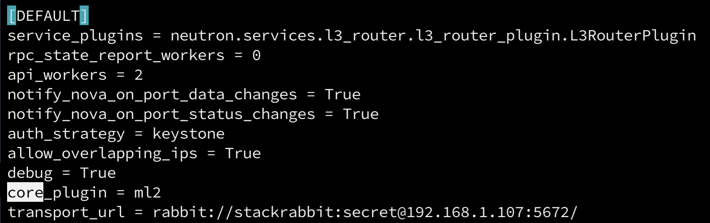
控制节点和计算节点都要配置
-
配置ML2使用linux-bridge mechanism driver:
/etc/neutron/plugins/ml2/ml2_conf.ini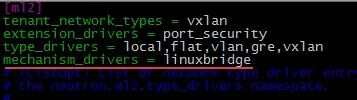
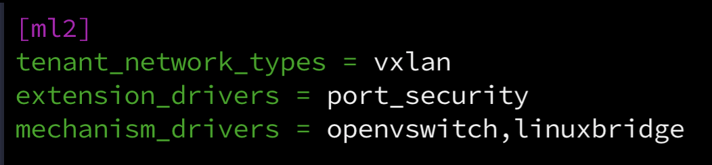
控制节点和计算节点都要配置; 可配置多个
-
重启Neutron服务, 查看neutron-linuxbridge-agent进程:
$ ps -efw | grep -v grep | grep neutron-linuxbridge-agent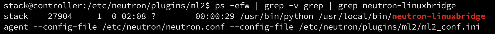
网络设备¶
- tap interface: tap0...
- linux bridge: brqXXXX
- vlan interface: ethX.Y
- vxlan interface: vxlan-Z
- 物理interface: ethX
local network¶
不会与宿主机任何物理网卡相连, 只可在 同一节点上 连接到 相同bridge 的instance之间通信
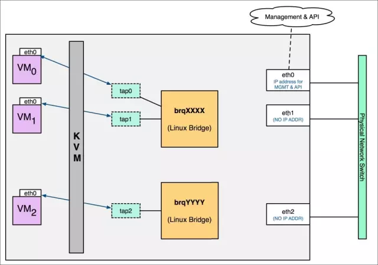
-
配置ML2加载local type driver:
/etc/neutron/plugins/ml2/ml2_conf.ini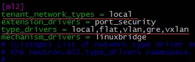
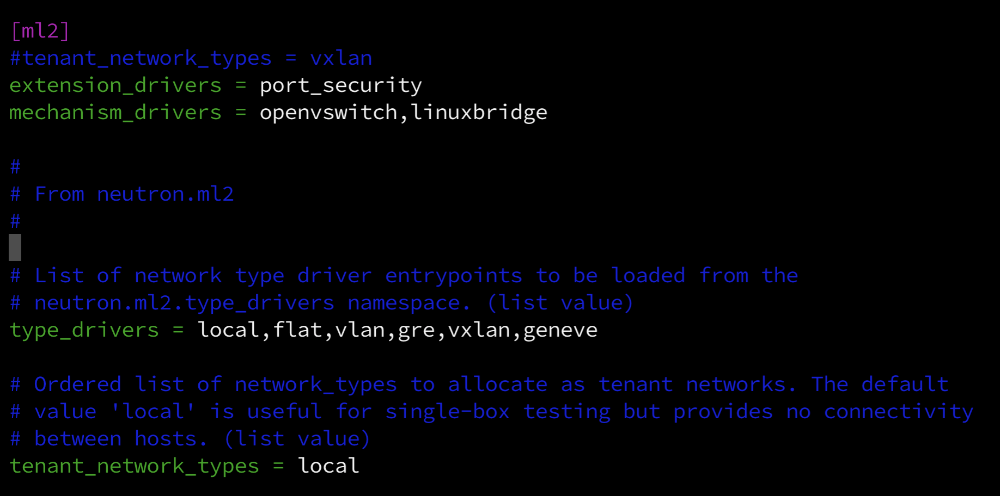
-
配置默认创建的网络类型tenant_network_types, 可以指定多种, 按优先级排序
- 重启Neutron服务
-
通过Web GUI创建local network
- Project - Network - Networks
- Admin - Networks, 通过admin创建network可以指定:
- 所属project
- network type
- 是否与其他project共享
- 是否为external network
-
ifconfig -a查看网络接口
- lo
- enp0s3
- enp0s8
- enp0s9
- brqa2fc38ff-53
- tapcdee5c64-7d
- tapef270cce-79
- virbr0
- virbr0-nic
- br-ex
-
查看linux bridge状态:
brctl show, 已创建brqXXX和tapXXX(DHCP interface)1 2 3 4 5
$ brctl show bridge name bridge id STP enabled interfaces brqa2fc38ff-53 8000.7e759c59ff32 no tapcdee5c64-7d tapef270cce-79 virbr0 8000.525400c2314c yes virbr0-nic
-
将instance连接到local network, 查看subnet中新增一个port(IP, MAC), 并将port attach到instance
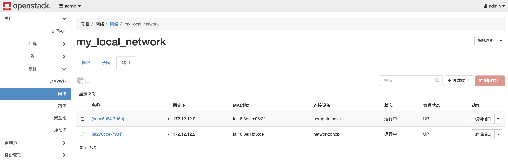
-
VM启动时, 宿主机上的neutron-linuxbridge-agent根据port信息创建tap设备, 并连接到local bridge上, 同时该tap映射成VM的虚拟网卡VIF
1 2 3 4 5 6 7 8 9
$ virsh list --all Id Name State ---------------------------------------------------- 1 instance-00000001 running $ virsh domiflist instance-00000001 Interface Type Source Model MAC ------------------------------------------------------- tapcdee5c64-7d bridge brqa2fc38ff-53 virtio fa:16:3e:ac:08:2f
flat network¶
不带tag的网络, Linux Bridge与物理网卡连接, 每个flat 独占一个网卡
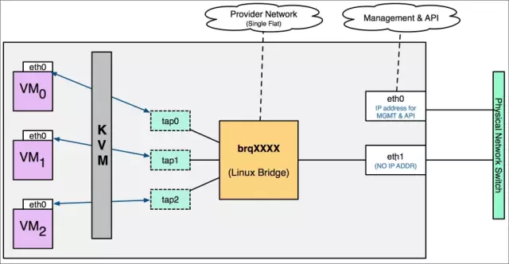
-
配置租户网络类型
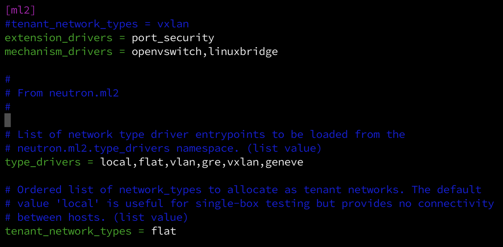
-
配置flat网络与物理网卡的对应关系
1 2 3 4 5
[ml2_type_flat] flat_networks = default[,flat2] [linux_bridge] physical_interface_mappings = default:enp0s8[,flat2:eth2]
-
创建flat网络和子网
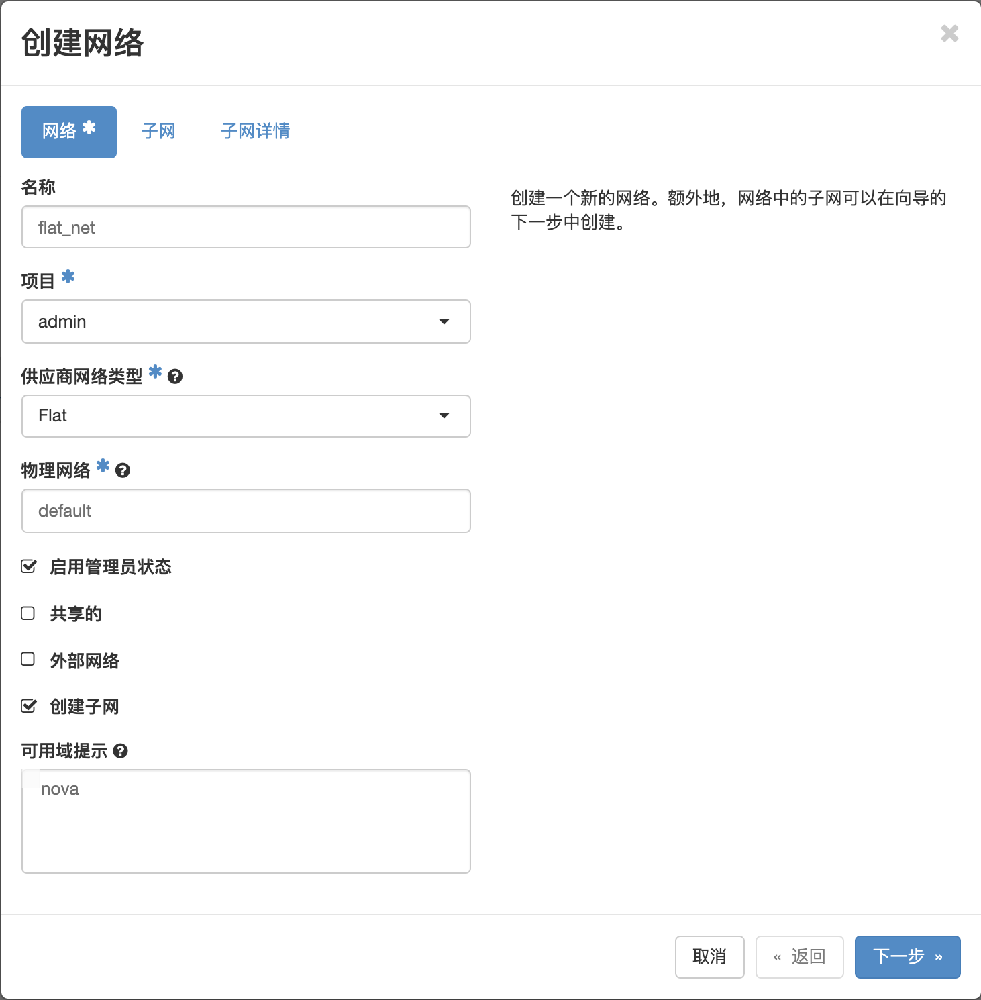
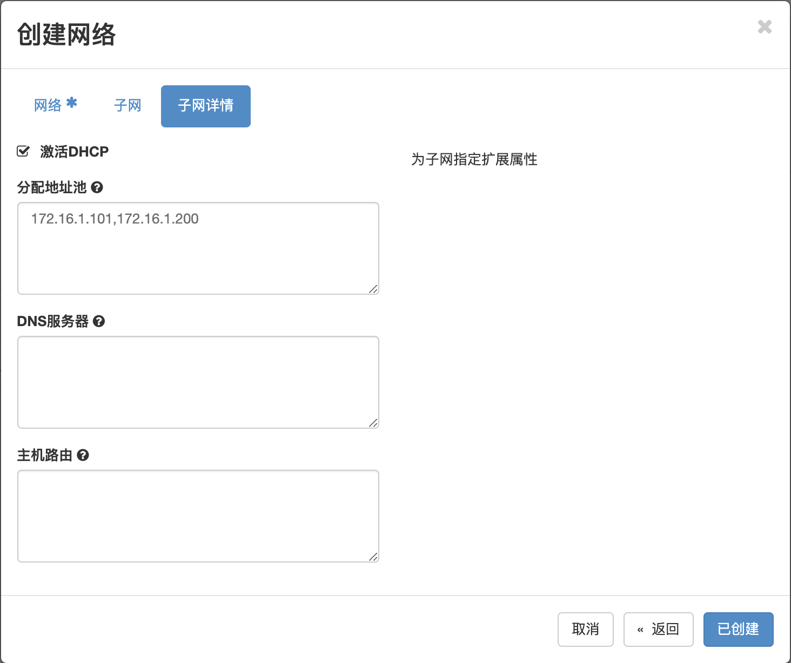
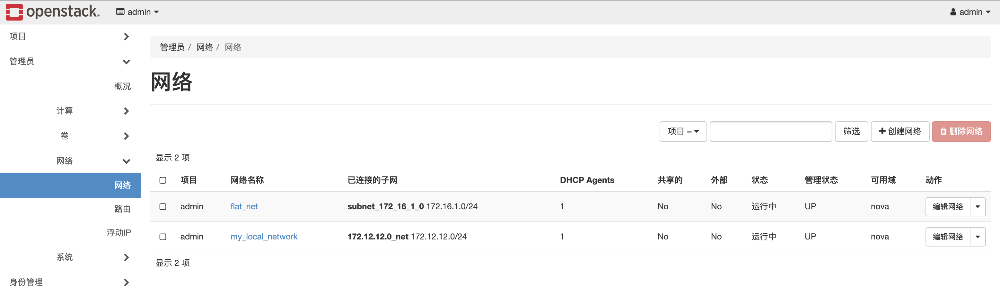
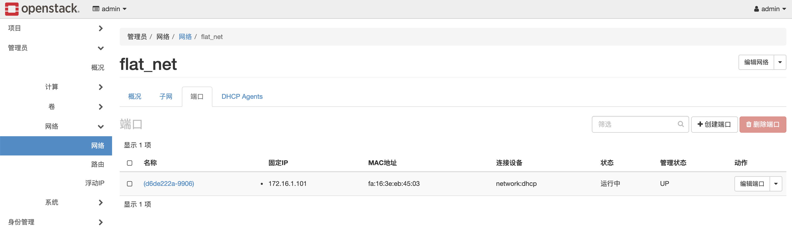
-
ifconfig查看新增加
brq9b013c6f-5d和tapd6de222a-991 2 3 4 5 6 7
$ brctl show bridge name bridge id STP enabled interfaces brq9b013c6f-5d 8000.080027f23a45 no enp0s8 tapd6de222a-99 brqa2fc38ff-53 8000.7e759c59ff32 no tapcdee5c64-7d tapef270cce-79 virbr0 8000.525400c2314c yes virbr0-nic
-
部署instance
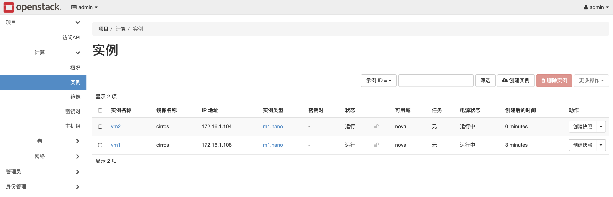
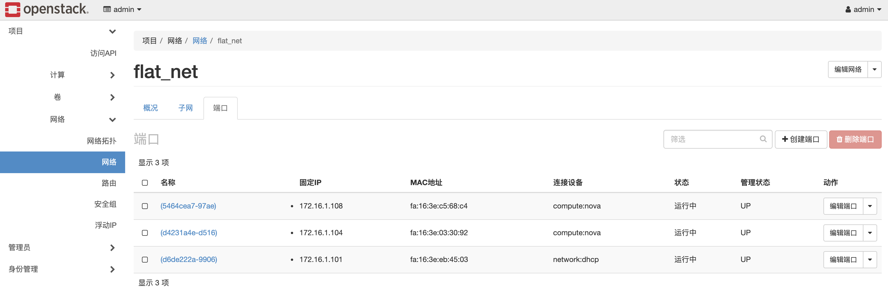
1 2 3 4 5 6 7 8 9
$ brctl show bridge name bridge id STP enabled interfaces br-ex 8000.000000000000 no brq9b013c6f-5d 8000.080027f23a45 no enp0s8 tap45bde37b-49 tap5464cea7-97 tapd4231a4e-d5 tapd6de222a-99 virbr0 8000.525400c2314c yes virbr0-nic
控制节点和计算节点上的网桥名称相同
已读
- 配置 linux-bridge mechanism driver - 每天5分钟玩转 OpenStack（77）
- 实践 Neutron 前的两个准备工作 - 每天5分钟玩转 OpenStack（78）
- 在 ML2 中 enable local network - 每天5分钟玩转 OpenStack（79）
- 创建第一个 local network（I） - 每天5分钟玩转 OpenStack（80）
- 创建第一个 local network（II）- 每天5分钟玩转 OpenStack（81）
- 将 instance 连接到 first_local_net - 每天5分钟玩转 OpenStack（82）
- 连接第二个 insance 到 first_local_net - 每天5分钟玩转 OpenStack（83）
- 创建第二个 local network - 每天5分钟玩转 OpenStack（84）
- 将 instance 连接到 second_local_net - 每天5分钟玩转 OpenStack（85）
- flat network 原理与配置 - 每天5分钟玩转 OpenStack（86）
- 创建 flat network - 每天5分钟玩转 OpenStack（87）
- 将 instance 连接到 flat_net - 每天5分钟玩转 OpenStack（88）
vlan network¶
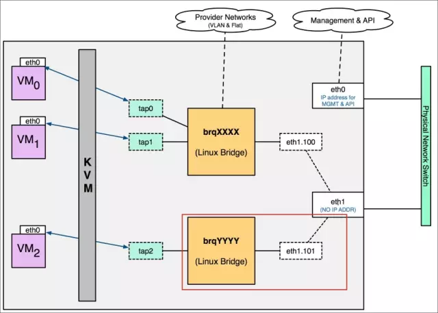
与eth1相连的物理交换机要设置成trunk口
-
指定租户创建的VLAN ID的范围:
/etc/neutron/plugins/ml2/ml2_conf.ini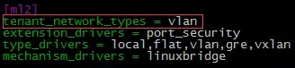
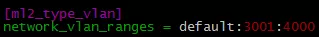
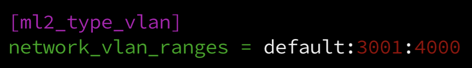
admin可以创建的范围为1~4094
-
指定VLAN与物理网卡的对应关系:
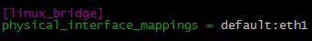
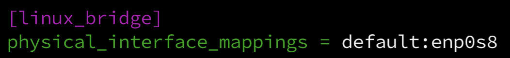
-
重启neutron服务
-
通过Web GUI创建vlan network
- 设置Segmentation ID(VLAN ID)为100
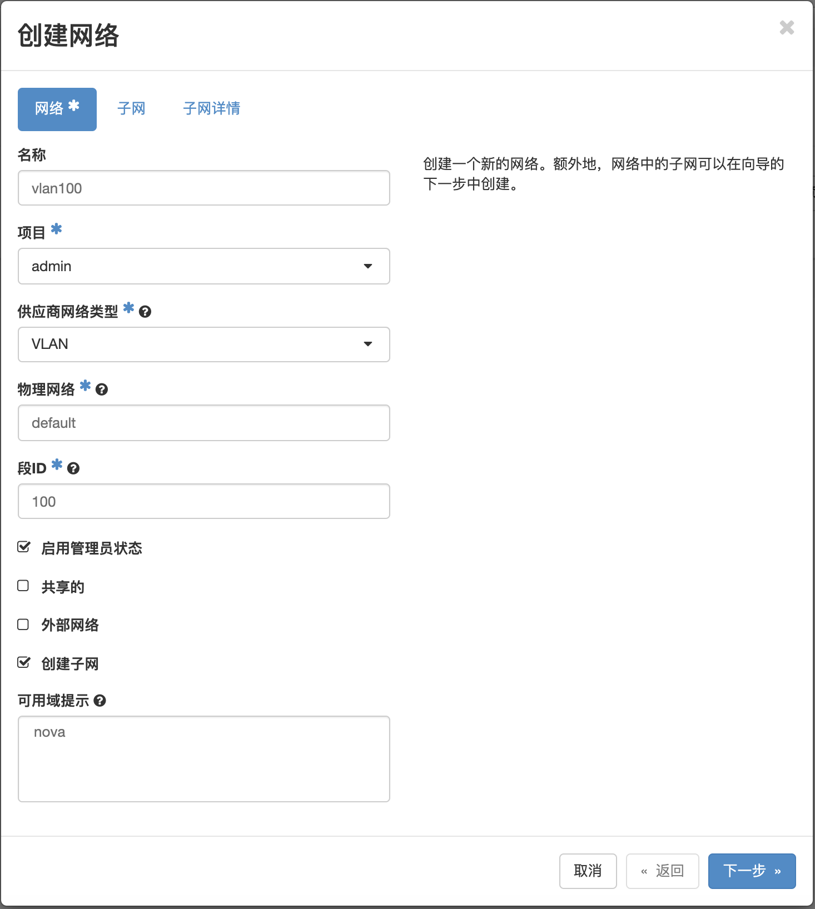
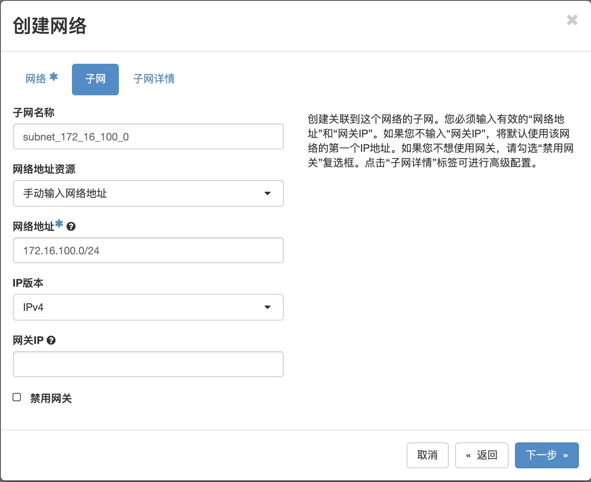
-
查看linux bridge状态:
brctl show, 已创建brqXXX和tapXXX(DHCP interface), 并挂载 eth1.100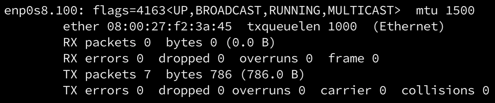
1 2 3 4 5
$ brctl show bridge name bridge id STP enabled interfaces brq79f0b942-92 8000.080027f23a45 no enp0s8.100 tap29389f61-ff virbr0 8000.525400c2314c yes virbr0-nic
-
launch新的instance VM1到vlan100, 创建tap并连接到brq
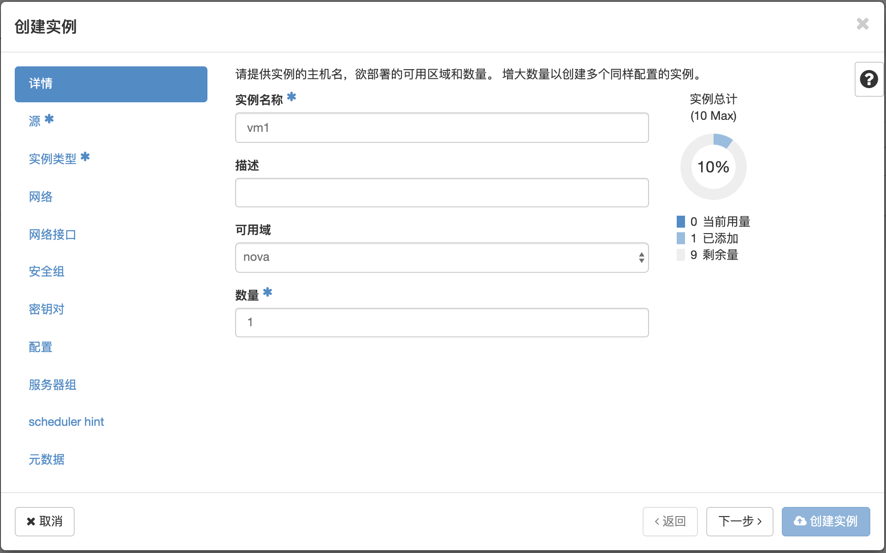
1 2 3 4 5 6
$ brctl show bridge name bridge id STP enabled interfaces brq79f0b942-92 8000.080027f23a45 no enp0s8.100 tap29389f61-ff tap5118ae25-b9 virbr0 8000.525400c2314c yes virbr0-nic
-
使用项目 - 网络 - 网络创建VLAN 101, 后台自动创建子接口为3001-4000
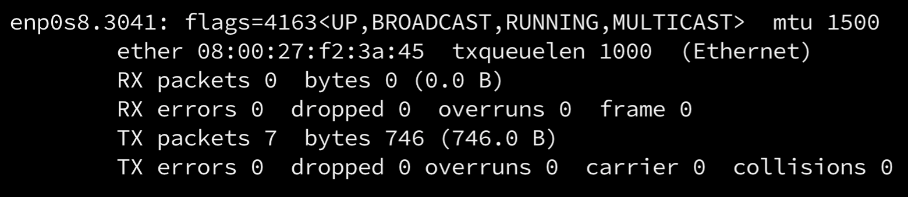
1 2 3 4 5 6 7 8 9
$ brctl show bridge name bridge id STP enabled interfaces brq79f0b942-92 8000.080027f23a45 no enp0s8.100 tap1f82ab4e-dd tap29389f61-ff tap5118ae25-b9 brq98e34498-29 8000.080027f23a45 no enp0s8.3041 tap44694333-91 virbr0 8000.525400c2314c yes virbr0-nic
-
lanch instance到VLAN 101
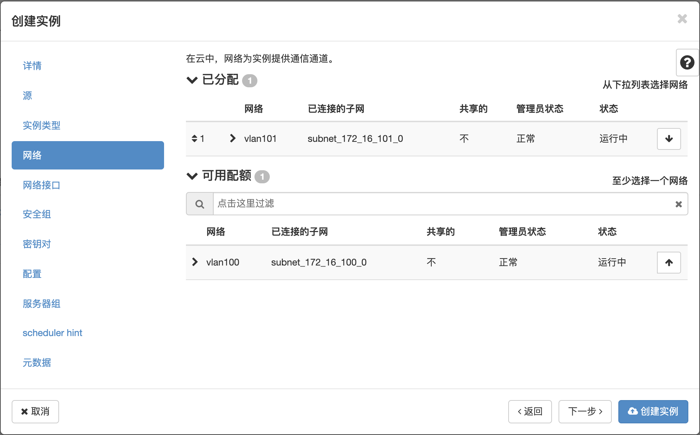
已读
DHCP¶
配置文件: /etc/neutron/dhcp_agent.ini
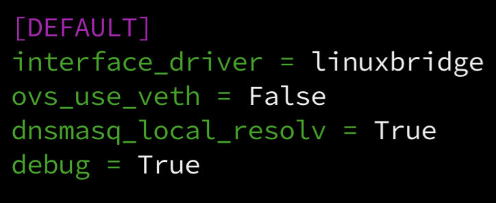
使用linux bridge连接DHCP namespace interface
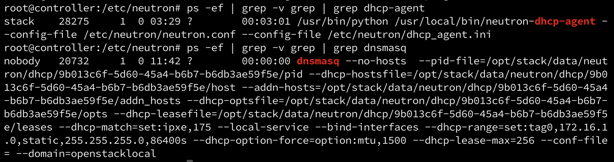
当创建network并在subnet上enable DHCP时, 网络节点上的DHCP agent会启动dnsmasq进程(与network一对一, 对应配置目录/opt/stack/data/neutron/dhcp/{ID})
- host: instance与IP/MAC对应关系
- interface: 绑定的tap设备
1 2 3 4 5 6 7 8 9 10 11 12 13 14 15 16 17 18 19 20 21 22 | $ pwd /opt/stack/data/neutron/dhcp/9b013c6f-5d60-45a4-b6b7-b6db3ae59f5e $ ll total 32 drwxr-xr-x 2 stack stack 4096 Sep 7 12:14 ./ drwxr-xr-x 3 stack stack 4096 Sep 7 11:42 ../ -rw-r--r-- 1 stack stack 256 Sep 7 11:42 addn_hosts -rw-r--r-- 1 stack stack 256 Sep 7 11:42 host -rw-r--r-- 1 stack stack 14 Sep 7 11:42 interface -rw-r--r-- 1 stack stack 248 Sep 7 11:42 leases -rw-r--r-- 1 stack stack 33 Sep 7 11:42 opts -rw-r--r-- 1 nobody nogroup 6 Sep 7 11:42 pid $ cat host fa:16:3e:71:e7:90,host-172-16-1-105.openstacklocal,172.16.1.105 fa:16:3e:c5:68:c4,host-172-16-1-108.openstacklocal,172.16.1.108 fa:16:3e:03:30:92,host-172-16-1-104.openstacklocal,172.16.1.104 fa:16:3e:eb:45:03,host-172-16-1-101.openstacklocal,172.16.1.101 $ cat interface ns-d6de222a-99 |
dnsmasq是一个提供DHCP和DNS服务的开源软件
Linux Network Namespace¶
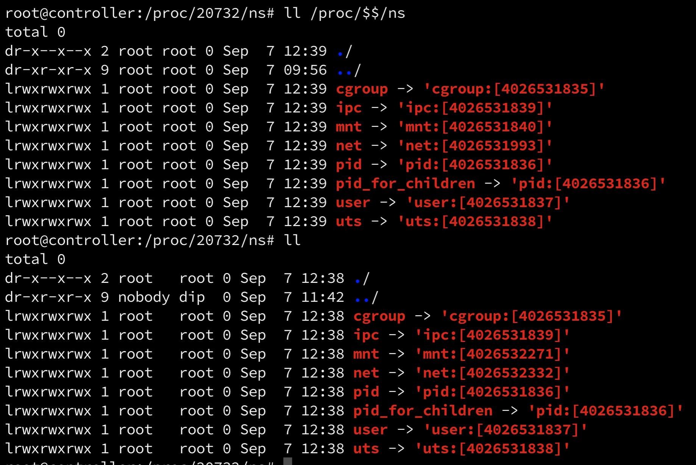
- 查看网络列表:
neutron net-list - 列出所有namespace:
ip netns list -
查看namespace中的网络配置:
ip netns exec xxxnamespace ip a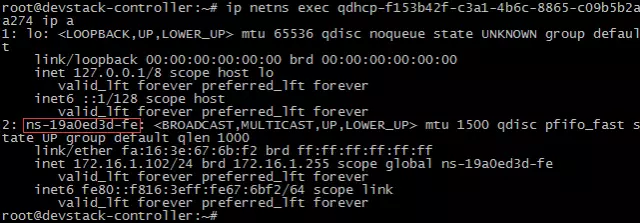
在不同的namespace下, 使用veth pair连接DHCP的tap(brq)和ns-xxx(qdhcp-xxx)
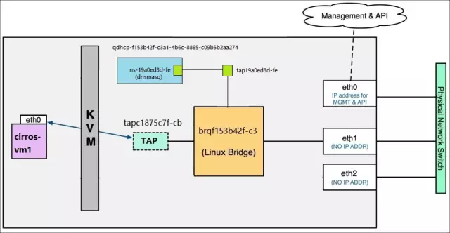
获取DHCP IP¶
-
创建instance时, neutron为其新增port(MAC, IP), 同时更新dnsmasq的host文件, nova-compute设置VM VIF的MAC地址
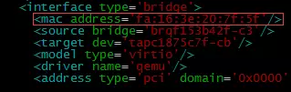
-
VM启动, 发出 DHCPDISCOVER 消息在flat_net中广播
- veth tap(DHCP)接收到消息, 传送给ns-xxx, dnsmasq检查其host文件, 发送 DHCPOFFER(IP, mask, 租期) 给VM
- VM发送 DHCPREQUEST 消息确认接收此DHCPOFFER
- dnsmasq发送确认消息 DHCPPACK
dnsmasq日志:
/var/log/syslog
已读
Open vSwitch¶
-
安装Open vSwitch agent
1 2
$ vim local.conf Q_AGENT=openvswitch
重新运行
./stack -
配置ML2使用openvswitch mechanism driver:
1 2
$ vim /etc/neutron/plugins/ml2/ml2_conf.ini mechanism_drivers = openvswitch
控制节点和计算节点都要配置
-
重启Neutron服务, 查看agent运行状态:
neutron agent-list
初始网络状态¶
Linux Bridge初始没有br
- br-ex: 连接外部(external)网络
- br-int: 集成(integration)网桥, 连接所有instance的虚拟网卡
- br-tun: 隧道(tunnel)网桥, VxLAN和GRE网络使用
使用ovs-vsctl show查看
网络设备¶
- tap interface: tapXXX
- linux bridge: qbrXXX
- veth pair: qvbXXX, qvoXXX
- OVS integration bridge: br-int
- OVS patch ports: int-br-ethX, phy-br-ethX
- OVS provider bridge: br-ethX
- 物理interface: ethX
- OVS tunnel bridge: br-tun
local network¶
- 通过Web GUI创建local network
- 查看Open vSwitch的状态:
ovs-vsctl show, 已创建tapXXX(DHCP interface)并挂载到br-int上 - 将instance连接到local network, 查看subnet中新增一个port(IP, MAC), 并将port attach到instance
-
VM启动时, 宿主机上的neutron-openvswitch-agent根据port信息创建tap设备, 并 创建Linux Bridge设备qbrXXX和veth pair连接br-int(qvoXXX)和qbrXXX(qvbXXX), tap连接到qbrXXX上, 同时该tap映射成VM的虚拟网卡VIF
为了支持iptables规则实现Security Group功能
使用ethtool -S qvbXXX查看statistics显示peer_ifindex
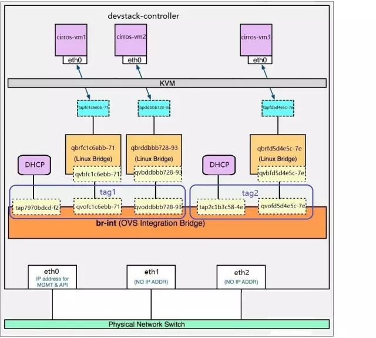
OVS在br-int上划分VLAN对不同的local network进行隔离
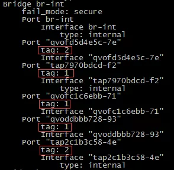
已读
flat network¶
-
创建ovs bridge br-eth1, 并将物理网卡eth1桥接在br-eth1上:
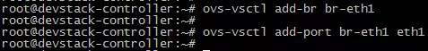
-
指定flat与物理网络的对应关系:
/etc/neutron/plugins/ml2/ml2_conf.ini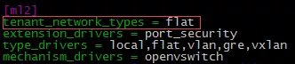
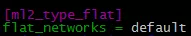
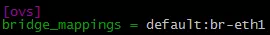
控制节点和计算节点相同配置, 重启Neutron服务
新增patch类型的int-br-eth1和phy-br-eth1, 分别通过peer指向对方
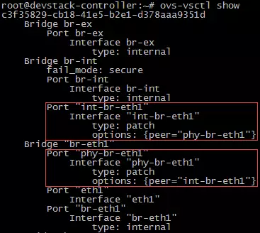
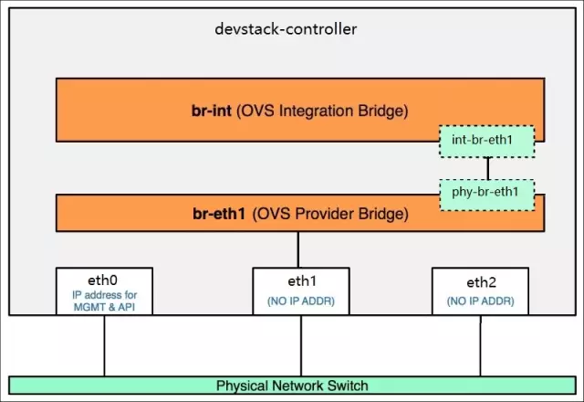
patch port: OVS特有类型
- 通过Web GUI创建flat network
- 查看Open vSwitch的状态:
ovs-vsctl show, 已创建tapXXX(DHCP interface)并挂载到br-int上 -
将instance连接到flat network, 创建Linux Bridge设备qbrXXX和veth pair连接br-int(qvoXXX)和qbrXXX(qvbXXX), tap连接到qbrXXX上, 同时该tap映射成VM的虚拟网卡VIF
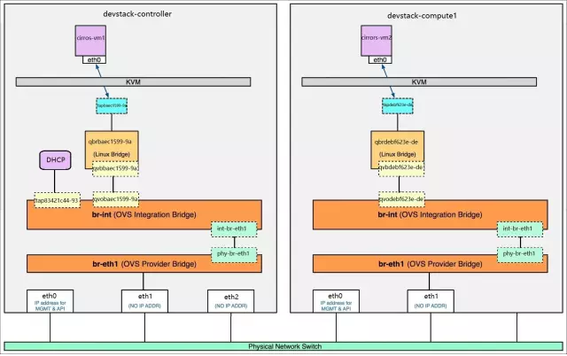
已读
vlan network¶
与eth1相连的物理交换机要设置成trunk口
-
指定租户创建的VLAN ID的范围:
/etc/neutron/plugins/ml2/ml2_conf.ini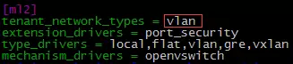
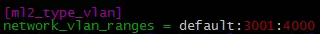
admin可以创建的范围为1~4094
-
创建ovs bridge br-eth1, 并将物理网卡eth1桥接在br-eth1上:
-
指定VLAN与物理网卡的对应关系:
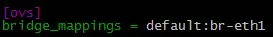
-
重启neutron服务
-
通过Web GUI创建vlan network
- 设置Segmentation ID(VLAN ID)为100
同时创建了flow rule
-
查看ovs bridge状态:
ovs-vsctl show, 已将tapXXX(DHCP interface)挂载到br-int, 并创建br-eth1和patch port, 挂载eth1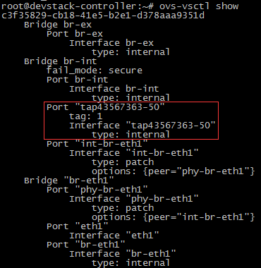
-
launch新的instance VM1到vlan100, 创建brq和veth pair, 并挂载tap
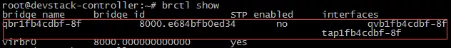
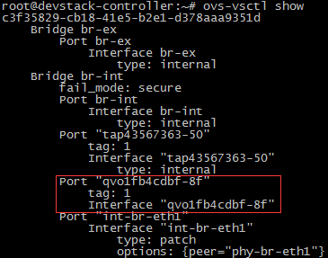
OVS通过flow rule指定如何对进出br-int的数据进行转发, 实现VLAN
-
查看flow rule:
ovs-ofctl dump-flow {bridge}- priority: OVS应用规则的优先级
-
in_port: OVS端口内部编号, 查看方式:
ovs-ofctl show {bridge} -
dl_vlan: 原始VLAN ID
- actions: 对数据包进行的操作
1 2 3 4
# 从该网桥的phy-br-eth1(in_port=2)接收进来的包 # 如果VLAN ID是1, 将其改为100 priority=4,in_port=2,dl_vlan=1 actions=mod_vlan_vid:100,NORMAL priority=4,in_port=2,dl_vlan=5 actions=mod_vlan_vid:101,NORMAL
内部的tag由phy-br-eth1通过br-eth1传出到eth1时, 转换为VLAN ID; 外部的VLAN ID由int-br-eth1通过br-int传入到qvo时, 转换为tag
已读